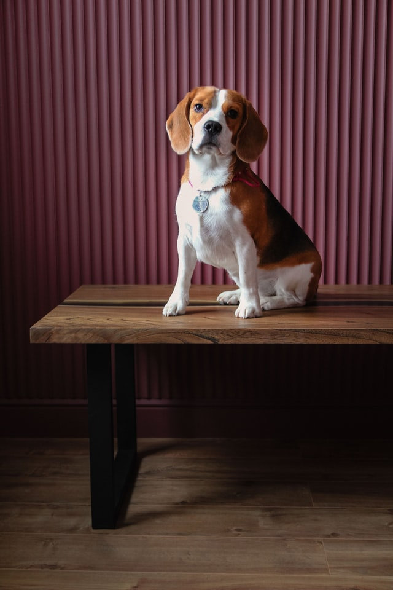

The beagle is a breed of small scent hound, similar in appearance to the much larger foxhound. The beagle was developed primarily for hunting hare (beagling). Possessing a great sense of smell and superior tracking instincts, the beagle is the primary breed used as a detection dog for prohibited agricultural imports and foodstuffs in quarantine around the world. The beagle is intelligent. It is a popular pet due to its size, good temper, and a lack of inherited health problems.
The modern breed was developed in Great Britain around the 1830s from several breeds, including the Talbot Hound, the North Country Beagle, the Southern Hound, and possibly the Harrier.
Beagles have been depicted in popular culture since Elizabethan times in literature and paintings, and more recently in film, television, and comic books.
History

The origin of the beagle is not known.[1] In the 11th century, William the Conqueror brought the St. Hubert Hound and the Talbot hound to Britain. In Britain both of these strains were then crossed with Greyhounds to give them speed and stamina for deer hunting.[2] Beagles are similar to the Harrier and the extinct Southern Hound, though smaller and slower.[1]
From medieval times, beagle was used as a generic description for the smaller hounds, though these dogs differed considerably from the modern breed. Miniature breeds of beagle-type dogs were known from the times of Edward II and Henry VII, who both had packs of Glove Beagles, so named since they were small enough to fit on a glove, and Queen Elizabeth I kept a breed known as a Pocket Beagle, which stood 8 to 9 inches (20 to 23 cm) at the shoulder. Small enough to fit in a "pocket" or saddlebag, they rode along on the hunt. The larger hounds would run the prey to ground, then the hunters would release the small dogs to continue the chase through underbrush. Elizabeth I referred to the dogs as her singing beagles and often entertained guests at her royal table by letting her Pocket Beagles cavort amid their plates and cups.[3] 19th-century sources refer to these breeds interchangeably and it is possible that the two names refer to the same small variety. In George Jesse's Researches into the History of the British Dog from 1866, the early 17th-century poet and writer Gervase Markham is quoted referring to the beagle as small enough to sit on a man's hand and to the:
little small mitten-beagle, which may be companion for a ladies kirtle, and in the field will run as cunningly as any hound whatere, only their musick is very small like reeds.[4]
Standards for the Pocket Beagle were drawn up as late as 1901; these genetic lines are now extinct, although modern breeders have attempted to recreate the variety.[5]
By the 18th century two breeds had been developed for hunting hare and rabbit: the Southern Hound and the North Country Beagle (or Northern Hound). The Southern Hound, a tall, heavy dog with a square head, and long, soft ears, was common from south of the River Trent and probably closely related to the Talbot Hound. Though slow, it had stamina and an excellent scenting ability. The North Country Beagle, possibly a cross between an offshoot of the Talbot stock and a Greyhound, was bred chiefly in Yorkshire and was common in the northern counties. It was smaller than the Southern Hound, less heavy-set and with a more pointed muzzle. It was faster than its southern counterpart but its scenting abilities were less well developed.[6]
Development of the modern breed
Reverend Phillip Honeywood established a beagle pack in Essex in the 1830s and it is believed that this pack formed the basis for the modern breed. Although details of the pack's lineage are not recorded it is thought that North Country Beagles and Southern Hounds were strongly represented; William Youatt suspected that Harriers formed a good majority of the beagle's bloodline, but the origin of the Harrier is itself obscure.[1] Honeywood's Beagles were small, standing at about 10 inches (25 cm) at the shoulder, and pure white according to John Mills (writing in The Sportsman's Library in 1845). Prince Albert and Lord Winterton also had Beagle packs around this time, and royal favor no doubt led to some revival of interest in the breed, but Honeywood's pack was regarded as the finest of the three.[7]
Although credited with the development of the modern breed, Honeywood concentrated on producing dogs for hunting and it was left to Thomas Johnson to refine the breeding to produce dogs that were both attractive and capable hunters. Two strains were developed: the rough- and smooth-coated varieties. The rough-coated beagle survived until the beginning of the 20th century, and there were even records of one making an appearance at a dog show as late as 1969, but this variety is now extinct, having probably been absorbed into the standard beagle bloodline.[8]
In the 1840s, a standard beagle type was beginning to develop; the distinction between the North Country Beagle and Southern Hound had been lost, but there was still a large variation in size, character, and reliability among the emerging packs.[9] In 1856, "Stonehenge" (the pseudonym of John Henry Walsh), writing in the Manual of British Rural Sports, was still dividing beagles into four varieties: the medium beagle; the dwarf or lapdog beagle; the fox beagle (a smaller, slower version of the Foxhound); and the rough-coated or terrier beagle, which he classified as a cross between any of the other varieties and one of the Scottish terrier breeds.[10] Stonehenge also gives the start of a standard description:
In size the beagle measures from 10 inches, or even less, to 15. In shape they resemble the old southern hound in miniature, but with more neatness and beauty; and they also resemble that hound in style of hunting.[10]
By 1887 the threat of extinction was on the wane: there were 18 beagle packs in England.[11] The Beagle Club was formed in 1890 and the first standard drawn up at the same time.[12] The following year the Association of Masters of Harriers and Beagles was formed. Both organisations aimed to further the best interests of the breed, and both were keen to produce a standard type of beagle.[13] By 1902, the number of packs had risen to 44.[11]